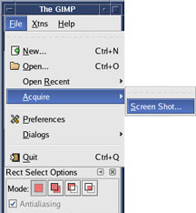
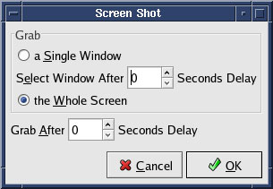
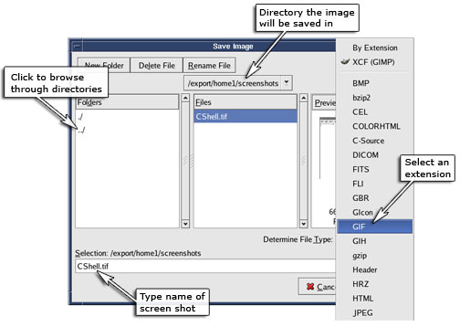

Operating Documentation
Direction 5670000, Rev# 1
Module Version 2.0, Version Date 7/7/08
Operating Documentation |
To start Gimp, open a C Shell terminal, type gimp at the prompt and press <Enter>. If Gimp is not configured on the host PC, follow the screen prompts to configure.
To capture a screen shot, move the gimp windows if they are blocking any portion of your shot.
From the Gimp File menu, select Acquire, and then Screen Shot.
Illustration 3: Gimp File Menu

When the Screen Shot dialog box (Illustration 4) displays, select your preference and then click [OK].
Illustration 4: Gimp Screen Shot Window

Click on the screen or the window you want to grab. Your captured screen shot displays in a new Gimp window.
To save the file, select Save As from the File menu.
In the Save Image window, name the file, select a file extension, and select the directory to save the file in.
Illustration 5: Saving an Image
